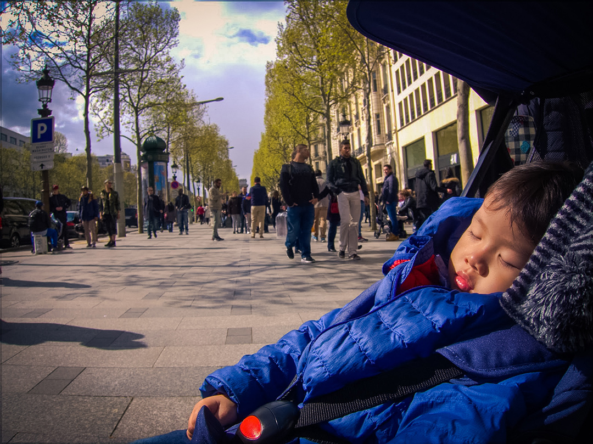
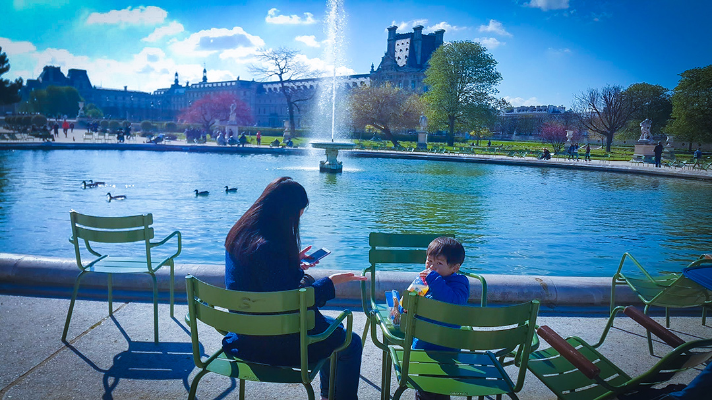
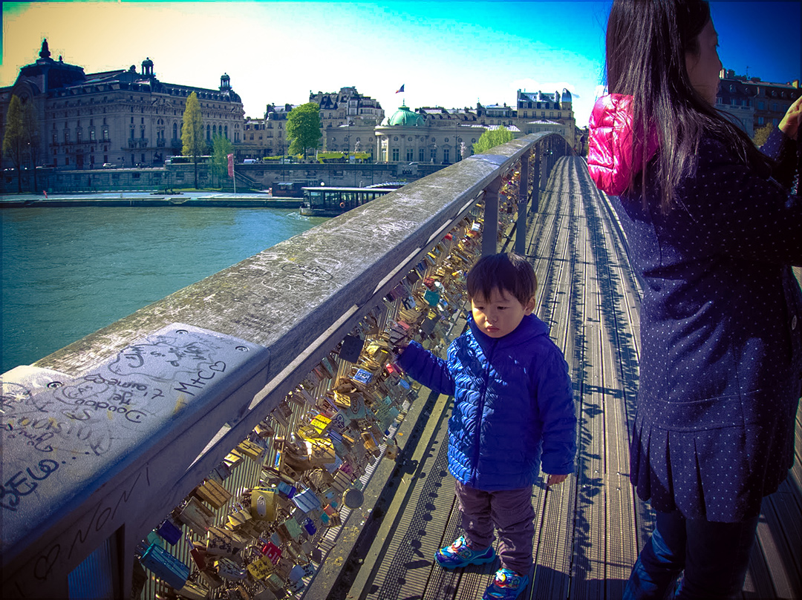
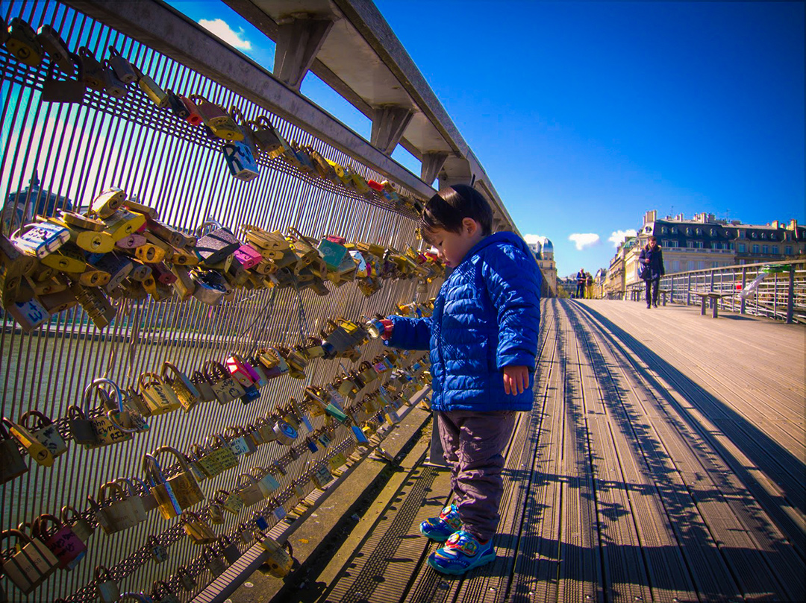

-
撰寫日期:2016.04.29
帶靖騰來巴黎過生日
巴黎自助心得筆記與感想:
◎ 2016/04/15~23 共9天
◎ 扣掉飛行與時差(巴黎早6小時)，實際行程:7天7夜
◎ 3人總花費:54.5K
(花費匯率以36元計算，但我們很久前就已默默計畫著，所以我在35.65時就已先買入)※ ※ 心得筆記 ※ ※
【食】
- 我們這次自己帶了兩組泡麵、一組科學麵、兩瓶魚罐頭、四包康寶濃湯，與三大瓶礦泉水。省下不少餐費!
- 法國的自來水(硬水)可生飲，但切記不可煮沸飲用，會有一層白色沉澱物(富含石炭)，煮麵煮湯泡牛奶就用自備的礦泉水。(超市也有賣水，價差頗大，比較後再買)
- 法國餐廳如果說要water是會收費的，不收費的水有專用詞"Une carafe d’eau"。
- G20(超商)、Monoprix(類似家樂福)非常便利，冷凍食品、麵包、三明治與紅酒都相對便宜。
- 冷凍食品種類很多，也較便宜(約1~5€)，只要微波加熱即可。諸如炒飯、義大利麵、披薩、炸物、壽司都有，口味對我來說都很適應。
- 餐廳熱食都很貴，基本都10€起，但披薩或小吃類約7€起。
- 隨便一家冰淇淋都好吃。
- 法國麵包偏硬，但很香!
- 馬卡龍甜死人不償命，不愛...
- 超商賣氣泡水有很多口味，價錢1€起，不錯喝可以嘗試。
- 自動販賣機2€起，熱門景點3€起。
【衣】
- "洋蔥式穿法"-去過歐洲旅行的人都知道，最好帶著發熱衣，就不用包太多層。
- 巴黎蠻多人戴圍巾，手套少數，口罩完全沒看到，台灣人習慣戴口罩，去到那邊就變得很明顯，容易成為目標 (小孩沒關係喔)。
- 日夜溫差大，但室內都有暖爐，可多帶一件短袖睡衣與睡褲。
- 有太陽的地方超級無敵舒服!!難怪歐洲人愛下午出門曬太陽，但只要一片雲遮住，立馬發冷。(所以我們三個曬成黑人)
- 真的很乾燥，唇膏乳液必備!! 每天醒來嘴唇都快裂了...
【住】》7天住宿花費約24.3K
- 不要為了省一點錢住靠近北邊的區域，這次住在瑪黑區(近中心第4區)
，這裡比較多紳士名流出沒，所以治安良好，也是許多交通的要塞，附近多是17世紀的建築。 - 強力建議最後一晚住機場飯店，推薦ibis Paris CDG Airport，第三航廈旁，相對便宜一晚2800左右(booking.com的早鳥優惠)。
- ibis Paris CDG Airport機場飯店走兩分鐘即可到達CDGVAL（機場輕軌電車），連接各航廈。
- 住機場飯店比較能放鬆休息，不用一大早推著行李趕車回機場，也可先行勘查路線，方便退稅與登機，節省時間就可以多逛一些免稅商店。
【行】》7天交通花費約5K
- 機場至市中心有多種選擇，網評最安全的是搭乘巴士Roissybus到歌劇院(Opera)
，車班多、停站少、座位多、不限行李、不用搬行李上下地鐵站，一人單程11€。 - Navigo周票卡有分種類，並非如預期一卡到底，而且價錢每年都不同，陰錯陽差捨棄此方式，還好有先做不同選擇的功課。
- 地鐵ticket+ 一次購買10張比較划算(10張14.1€，單張1.8€)，可以用來乘坐巴黎地鐵、巴士和RER鐵路。
- 搭乘巴黎地鐵是算次的，搭乘範圍是市區內(zone 1~2，個別路線會有一小段延伸至zone 3)，不像台北捷運用距離算錢。
- RER是行駛市區至近郊的高速火車，ticket+只限於zone 1使用，這次去迪士尼和outlet(zone 5)就必須轉乘RER。
【便利性】
- 這次去歐洲上廁所完全沒有花錢，很多大型連鎖店(如麥當當，肯得基、QUICK速食店...等)
上廁所都不收費了，街道上也都有固定的"科技公共廁所"，巴黎鐵塔也有公廁，只是會安檢。(若遇到需付費大約是0.5€起) - 不放心也可以上網google巴黎公廁位置地圖(http://paris-pissouze.com/)。
- 機場退稅有電子退稅區，電子退稅有中文介面，退稅單掃一下條碼就可以，然後再找對應的信箱投入即可(這方法也不用手提著退稅物品檢查)。
- 感謝一下口袋推車，便利性大增(進餐廳後可收很小，大家都驚呼連連)，只是某些石頭路還是沒那麼好推(除非歐洲牌大輪子，不然應該都難推)。
【其他】
- 巴黎街道沒有想像中髒亂，反而都蠻乾淨的(不知道是不是區域有差)，一路上看到很多清潔人員，過幾條巷口就會放置大型垃圾桶，唯一有感覺髒亂是巴黎鐵塔附近的橋。
- 地鐵怪味也是要看哪條線，這次只搭到五條線，我是沒聞到太噁的怪味。
- 走在某些小巷弄比較需要閃地上狗屎。
- google map 一樣超好用，因為手機有鍊子扣在防搶包上，所以還是大辣辣拿著手機找路。
【安全注意事項】
- 盡量走在寬廣大馬路，一個轉角巷弄可能就是地雷區。
- 巴黎的朋友建議行走在路上少與陌生人對上眼，但都不看怎麼預防@@? 所以我大部分會帶著墨鏡，方便觀察四周動靜。
- 搭乘交通工具時扒手多，地鐵4分鐘一班，所以真的巴黎人搭地鐵都不趕時間的，有推擠必有詐。
- 若帶著小孩搭地鐵要通過較寬的閘門，通常會有黑人想逃票跟著進來(閘門開啟和關閉都很久)，注意物品就好，別阻止了...
部分地鐵有行李通道，部分較寬閘門無法插票，需通知站務人員。 - 各大景點見識到吉普賽婦人問券團，黑人小販反而感覺沒有那麼恐怖(只是工作賺錢)，但還是請隨時提高警覺。
- 若提著小行李箱(或大一點的包包)搭地鐵，最好夾在兩腳中間。
- 購物後最好分裝到自己攜帶的"不起眼"包包，避免露出品牌包裝袋。
- 若要上巴黎鐵塔頂端，記得不能攜帶尖銳物品，會過X光檢查，查到沒收。(才剛買7€的紅酒開瓶器差點就再見了，小妹使出裝可憐表情，該死的風流老頭眨眼過關= =+)
※ ※ 感想 ※ ※
每結束一段旅行，
總是很感謝，
每一個協助這段旅程的人事物，
也總是感到不可思議，
踏進家門心裡會想著...
到底哪裡來的勇氣?
或許我們工作總是面對冰冷的機器，
渴望帶著孩子一起透過雙腳與雙眼去感受世界吧 !
回想幾段過程，兩個人會的英文沒幾句，
靠著肢體語言扭來扭去，也就這樣扭到返家 :D
既然歐洲挑戰成功，我想下一段旅行也沒什麼好怕的。
繼續努力工作、省吃儉用、認真計畫，接著實現夢想吧!!
期待吧。 -
出機場後的空氣有點冷~但感覺很舒服。
做好準備迎接歐洲自旅大挑戰!!# 靖騰還在調時差
-
FB 撰寫日期:2016.04.20
今日午餐 : 晴空萬里草莓氣泡水+超商三明治佐巴黎鐵塔。
-
先來張父子照 ^^
# 巴黎鐵塔
-
# 巴黎鐵塔下野餐
-
# 陽光灑在身上特別溫暖
-
# 吃隻冰淇淋擁有好心情
-
# 艾菲爾鐵塔的觀景層，朝向塞納河對岸的特羅卡德羅廣場、夏佑宮與花園
-
靖騰 : 美景哪有我夢境香~ :)
# 艾菲爾鐵塔
-

靖騰 : 下一站我繼續睡~想不到吧 XD
# 香榭麗舍大道
-
靖騰 : 嘿嘿~我就不醒~ㄌㄩㄝ~
# 香榭麗舍大道
-
# 凱旋門
-
巴黎警: 聽說有個代號小紅帽的特工...
靖騰: 難道我的身分被發現了?# 凱旋門下
-
# 杜樂麗花園-背後是協和廣場的摩天輪
-
靖騰: biu biu biu~
# 杜樂麗花園 Jardin des Tuileries
-

悠閒的曬曬陽光~
# 杜樂麗花園的大圓池（Grand Bassin Rond）
-
靖騰: 你們坐~我有自己的椅子
# 杜樂麗花園中央砂石廣場，背後是羅浮宮與卡魯索凱旋門方向
-
爸爸: 看我打拳~
靖騰: 爹~太丟臉了~我先閃了# 杜樂麗花園中央林蔭大道
-
靖騰: 我想再吃兩隻冰淇淋 :)
# 杜樂麗花園靠羅浮宮南翼
-
巴黎旅遊影片-杜樂麗花園靠塞納河一側的林蔭步道，點擊播放 # 杜樂麗花園靠塞納河一側的林蔭步道
-
來這裡的路上真是膽戰驚心~誤闖黑人區被上百隻眼睛盯著，冷汗直流...
# 聖心堂
-
挖~人3人hi~
# 聖心堂台階
-
# 羅浮宮金字塔
-
靖騰: 我想換這台車 :)
# 羅浮宮金字塔
-

眉頭深"鎖"的靖騰
# 塞納河上的藝術橋(情人鎖)
-

靖騰: 怎麼拔不下來呢?
爸媽: 不行!!# 塞納河上的藝術橋(情人鎖)
-
# 為母則強
-
# 巴黎聖母院教堂南側的「Pont au Double」小橋上
-
靖騰: 好棒喔~我們快去玩吧~
# 法國迪士尼我們來囉!!!
-
靖騰: 太陽太大眼睛睜不開了XD
-
靖騰: 拍完了沒~我想去玩了 T^T
-
靖騰: 把拔，這裡有怪叔鼠...
-
靖騰: 馬麻...這和剛剛說的不一樣 @0@
# 不是該抱我嗎? 你怎麼抱我媽?
-
巴黎旅遊影片-靖騰坐旋轉木馬，點擊播放 # 靖騰坐旋轉木馬
-
撰寫日期:2017.05.09
靖騰: 我是紅色的羅伊，把拔是藍色的波力。
# 機場飯店內